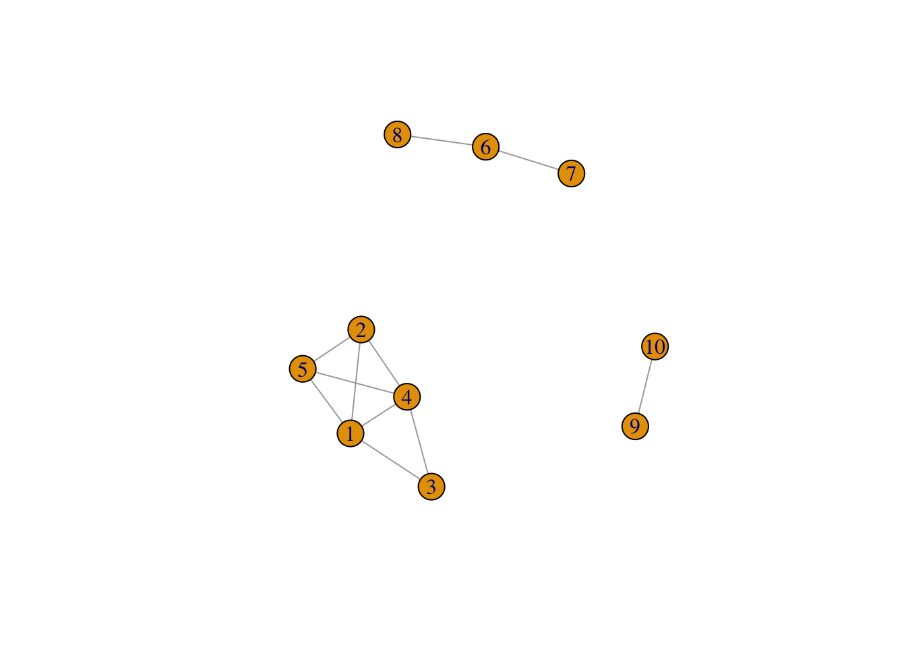
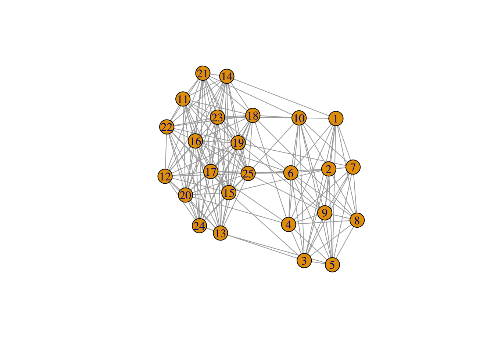
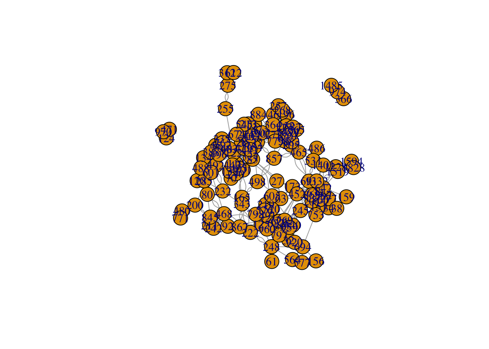
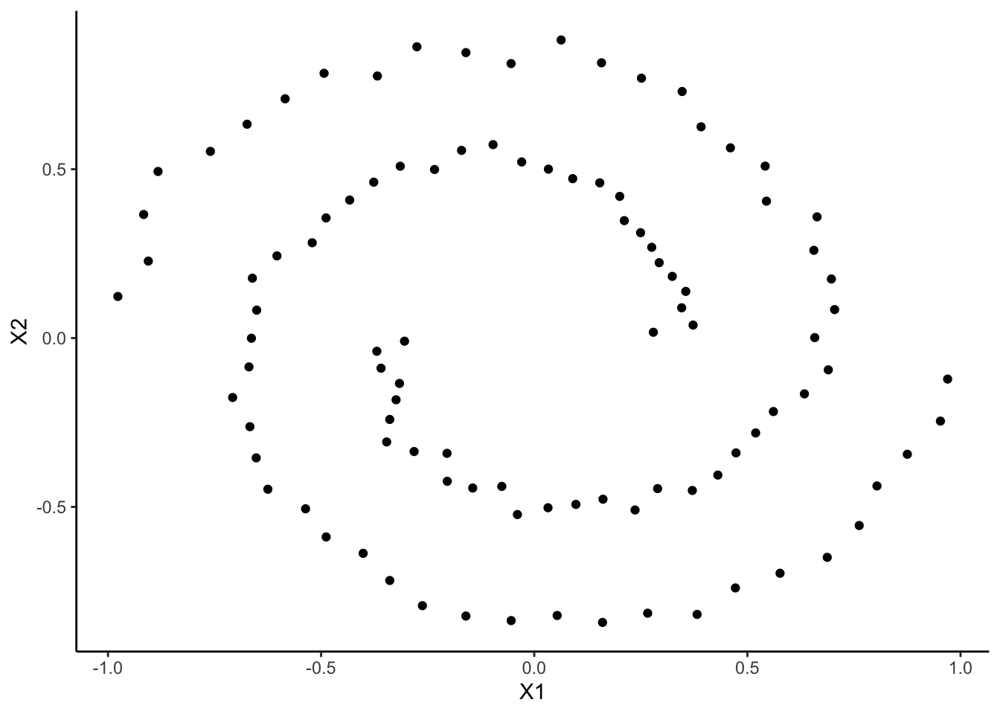

Chapitre 4 Clustering spectral
Le clustering spectral est un algorithme de classification non supervisé qui permet de définir des clusters de nœuds sur des graphes ou d’individus pour des données individus/variables. L’algorithme est basé sur la décomposition spectrale du Laplacien (normalisé) d’une matrice de similarité, il est résumé ci-dessous :
Entrées :
- tableau de données \(n\times p\)
- \(K\) un noyau
- \(k\) le nombre de clusters.
- Calculer la matrice de similarités \(W\) sur les données en utilisant le noyau \(K\)
- Calculer le Laplacien normalisé \(L_{\text{norm}}\) à partir de \(W\).
- Calculer les \(k\) premiers vecteurs propres \(u_1,\dots,u_k\) de \(L_{\text{norm}}\). On note \(U\) la matrice \(n\times k\) qui les contient.
- Calculer la matrice \(T\) en normalisant les lignes de \(U\) : \(t_{ij}=u_{ij}/(\sum_\ell u_{i\ell}^2)^{1/2}\).
- Faire un \(k\)-means avec les points \(y_i,i=1,\dots,n\) (i-\(ème\) ligne de \(T\)) \(\Longrightarrow\) \(A_1,\dots,A_k\).
L’objet de ce chapitre est de travailler sur cet algorithme en le programmant, puis en utilisant la fonction specc du package kernlab.
4.1 Clustering spectral sur 1 graphe à 3 composantes connexes
On crée tout d’abord un graphe avec trois composantes connexes : on utilise la commande sample_gnp() qui permet de créer un graphe selon le modèle d’Erdos-Renyi.
set.seed(1)
n1 <- 5
n2 <- 3
n3 <- 2
n <- n1+n2+n3
# il faut prendre des grandes valeurs de p sinon on risque d'avoir des sous-graphes non connexes
p1 <- 0.85
p2 <- 0.75
p3 <- 0.7
G1 <- sample_gnp(n1,p1)
G2 <- sample_gnp(n2,p2)
G3 <- sample_gnp(n3,p3)
G <- G1 + G2 + G3 # il cree un graphe avec ces 3 sous-graphes
plot(G) On vérifie le nombre de composantes connexes
components(G)$no
[1] 3Calculer la matrice d’adjacence de G et en déduire le Laplacien non normalisé.
Retrouver ce Laplacien avec la fonction laplacian_matrix.
Calculer les valeurs propres et représenter les sur un graphe. Que remarquez-vous ?
Obtenir les trois vecteurs propres associés à la valeur propre nulle. Commenter.
Terminer l’algorithme de clustering spectral avec l’étape de \(k\) means.
Visualiser les clusters.
Refaire le même travail en utilisant le laplacien normalisé. On n’oubliera pas d’ajouter l’étape de normalisation en utilisant par exemple la fonction suivante :
normalize <- function(x){
return(x/sqrt(sum(x^2)))
}4.2 Programmer le clustering spectral pour un graphe
Exercice 4.2 (Construction de l'algorithme) Créer une fonction R qui admet en entrée :
- un graphe
- une valeur de \(K\) (un entier positif)
et qui renvoie les groupes pour le clustering spectral à \(K\) groupes ainsi que le graphe des valeurs propres (en ggplot si possible).
Igraph possède une fonction permettant de faire directement le spectral clustering : embed_laplacian_matrix. Mais en argument, il faut lui donner le nombre \(K\) de clusters souhaité. En pratique, on ne connait pas \(K\), et une façon de le trouver est de regarder le trou spectral dans le graphe des valeurs propres.
La fonction embed_laplacian_matrix s’utilise ainsi :
res2 <- embed_laplacian_matrix(G,8,which="sa",scaled="FALSE",degmode = "all")
res2$D
[1] 0 0 0 1 2 2 3 4On peut faire du clustering spectral à 3 groupes avec :
res3 <- embed_laplacian_matrix(G,3,which="sa",scaled="FALSE",degmode = "all")
res_spectral <- kmeans(res3$X, centers = 3, nstart = 100)
res_spectral$cluster
[1] 1 1 1 1 1 3 3 3 2 2Exercice 4.3 (Graphe avec deux communautés faiblement connectées entre elles) On considère le graphe suivant obtenu selon un modèle SBM :
set.seed(1234)
n <- 25# nombre de noeuds
Q <- 2 # nombre de cluster clusters
pi <- c(0.4, 0.6) # taille des groupes
effectifs <- n*pi
connectivite_matrix <- matrix(c(0.9, 0.15,
0.15, 0.95),nrow=Q) # matrice de connexion
G <- sample_sbm(n, pref.matrix=connectivite_matrix, block.sizes = effectifs)
plot(G) Effectuer le clustering spectral sur ce graphe, on essaiera notamment de choisir le nombre de groupes.
4.3 Exemple sur des graphes “réels”
On considère le graphe friends disponible ici
friends <- read.table(file="data/Friendship-network_data_2013.csv") G.friends <- graph_from_data_frame(friends,directed=F) # non dirige plot(G.friends) Appliquer le clustering spectral à ce graphe. On pourra comparer la classification obtenue avec celle de la méthode de Louvain en utilisant la fonction compare.
Faire de même avec le graphe karate.
library(igraphdata) data(karate)
4.4 Clustering spectral : cas général
Nous avons étudié jusqu’ici l’algorithme du clustering spectral pour trouver des clusters de nœuds (ou communautés) dans les graphes. On remarque néanmoins que l’algorithme ne repose pas sur le graphe en lui même, mais uniquement sur une matrice d’adjacence (ou similarité) issue de ce graphe. Il est par conséquent possible d’utiliser cet algorithme pour des données standards (tableaux individus-variables), à partir du moment où on peut calculer une matrice de similarité à partir de ces données. Il est également possible d’utiliser des noyaux pour définir cette similarité. La fonction specc de kernlab permet de faire un tel clustering.
Exercice 4.4 (Clustering spectral pour des psirales) On considère les données spirales
set.seed(111)
library(mlbench)
n <- 100
simu <- mlbench.spirals(100,1,0.025)
names(simu)
[1] "x" "classes"data <- simu$x
head(data)
[,1] [,2]
[1,] 0.5609898 -0.21756239
[2,] 0.2793522 0.01718273
[3,] 0.3725821 0.03849122
[4,] 0.3457879 0.08963081
[5,] 0.1577921 0.81528541
[6,] -0.1603697 0.84547763et on les visualise.
df <- data.frame(simu$x)
ggplot(df)+aes(x=X1,y=X2)+geom_point()
Appliquer les algorithmes suivants pour tenter de visualiser les deux groupes :
- clustering spectral avec noyau linéaire
- clustering spectral avec noyau polynomial de degree 2
- clustering spectral avec noyau radial
- \(k\)-means
- CAH avec single linkage
- CAH avec lien de Ward